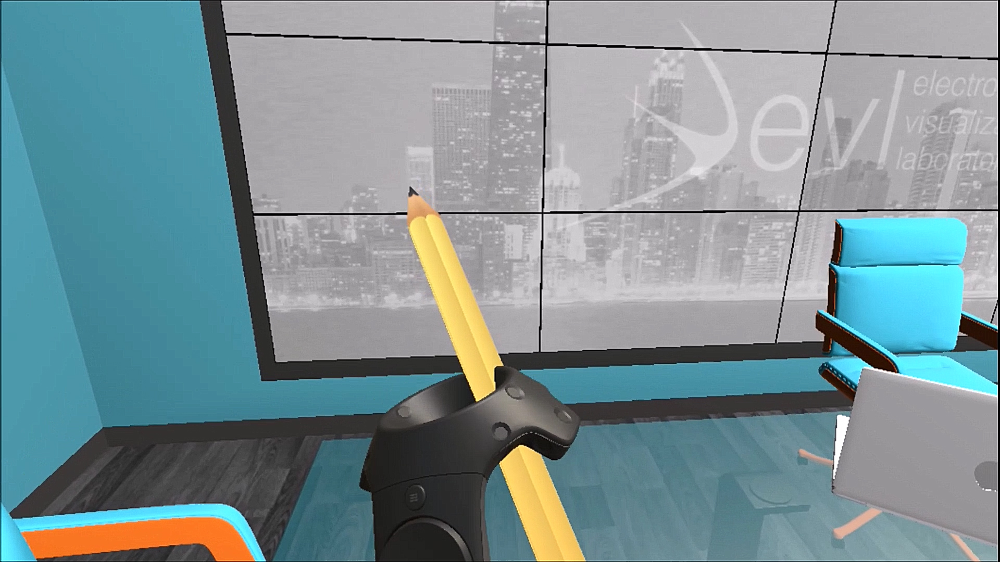
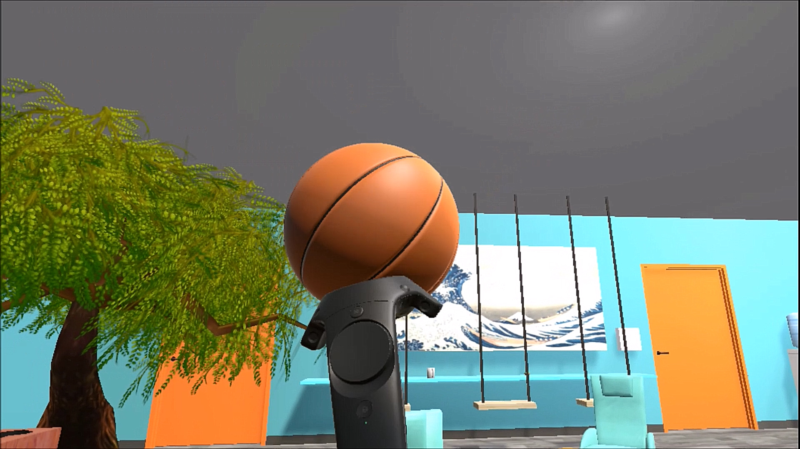
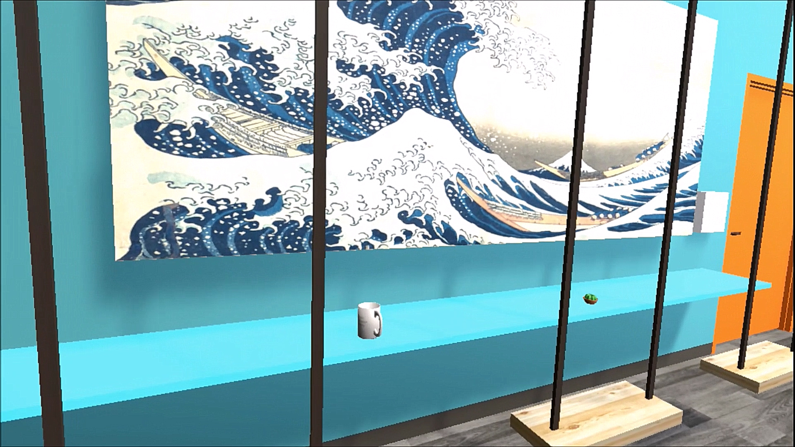

Overview

This was the first project done in my CS 491 Virtual Reality class. We have a replica of our classroom modeled in Unity, and our task was to redesign the classroom. Modern classrooms and workspaces involve a lot of fun equipment to work and play with, involving foosball tables, specific mood lighting, etc. We were instructed to think about what kind of workspace we would enjoy working in, and then we made an environment in Unity to display what we imagined.
Video Overview
Instructions
I made a classroom with three major areas. I created a recreational area, two study areas, and a meeting/conference area. The recreational area contains a pool table, a tree, a basketball and a basketball hoop. You can pick up the basketball and throw it, and you can pick up the pool ball, the pool stick, and the ball rack. The study area contains three tables, a floating desk, and a swing. You can pick up the fidget spinner, the watch, the cactus, the mug, and the headphones. The conference area contains the large conference table, a water cooler, a pencil, a book, a laptop, and a notepad. You can pick the objects up that are on the table.
Additionally, the water cooler will make a bubbling noise upon approaching it, the pencil will make a scribbling noise upon approaching it, and the laptop will make a sound with the keys clacking.
Using the wands, you can physically pick up the basketball and throw it.
Difference between Teleporting and Wand-Based Navigation
Using the Teleporting option was useful and quick. Being able to quickly go from one side of the room to another was convenient. However, sometimes the speed at which I could move made my head a little dizzy.
Wand-based navigation excelled when interacting with the objects around me. Though it made moving around a little more difficult, the interaction between myself and the objects I wanted to pick up and throw was a lot more seamless.
Experience
In comparison to the actual classroom itself, this room feels a lot more open and spacious, and the colors make it seem a lot more fun. Because so much furniture was replaced in the room, it doesn't seem very similar to the old room at all. However, it is clear that the size is similar, because the doors are about the same height from where I stand in real life as in the VR space. However, it is difficult to replicate the exact type of lighting that exists in the classroom, so it is hard to really "feel" like I'm not in a VR space.
The lighting doesn't exactly look right, and I think there is a lot of progress yet to be made before the lighting can effectively replicate real lighting.